Tutorial de como hospedar uma página no github
Sobre o projeto ....
Sobre o github ....
-
1 - Com o editor de texto aberto (no exemplo foi usado o VS Code), crie um arquivo html. Por convenção, esse arquivo da página principal é chamado index, e a extensão do arquivo é html. Dessa forma o nome do arquivo príncipal será: index.html
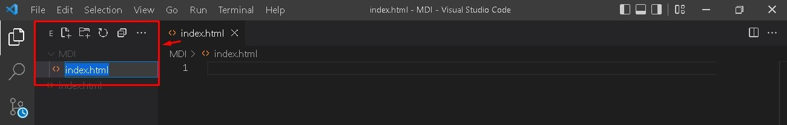 -
2 - Para o exemplo, foi criado um programa em JavaScript que recebe dois números do usuário, armazena cada um em uma variável, executa a soma e retorna o valor da soma. Para executar esse programa em uma navegador, ele deve esttar dentro das tags html e script, como na imagem a baixo:
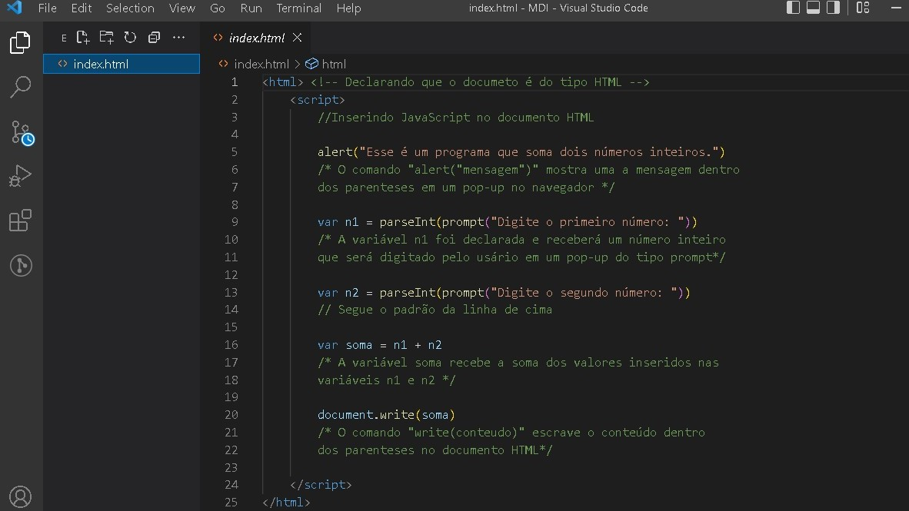 -
3- Abra a pasta e execute o arquivo para testá-lo antes de enviar para o github.
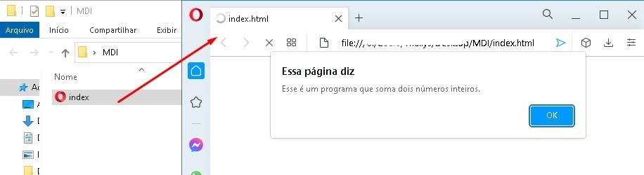 -
4 - Acesse o site clicando aqui e faça seu login ou crie sua conta gratuitamente!
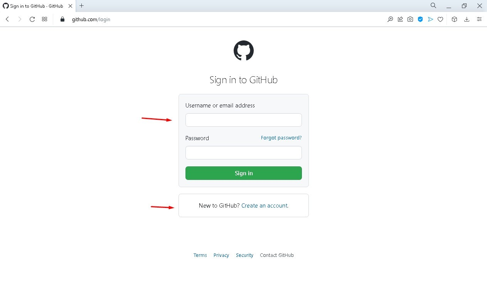 -
5 - Uma das formas de criar um repositório remoto no github é usando o botão "new" na página principal:
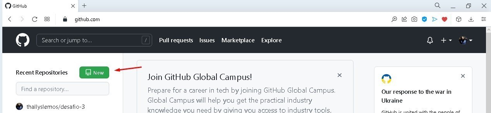 -
6 - O primeiro passo ao criar um repositório é colocar o nome do repositório.
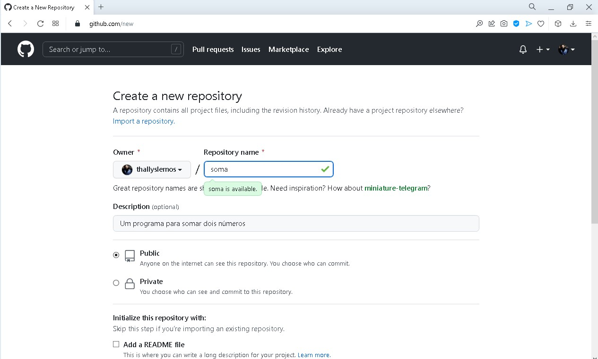 -
7 - Para esse exemplo, basta manter os demais campos de marcação com o preenchimento padrão e clicar no botão de criar repositório.
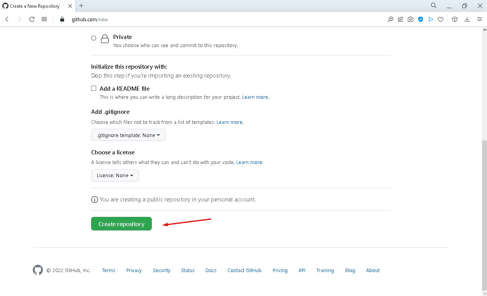 -
8 - O repositório foi criado, falta criar ou enviar um arquivo. Nesse caso o arquivo já foi criado, então vamos fazer um upload do arquivo clicando no link soblinhado:
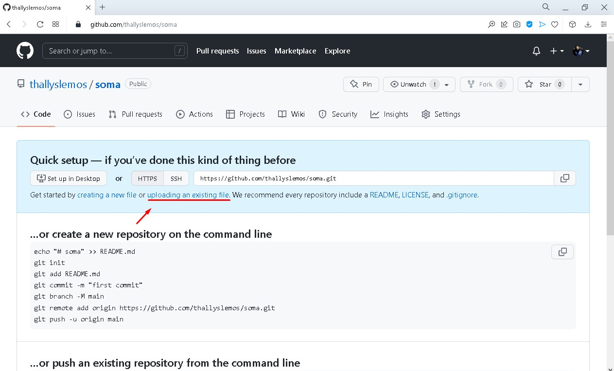 -
9 - Arraste o arquivo até o local indicado:
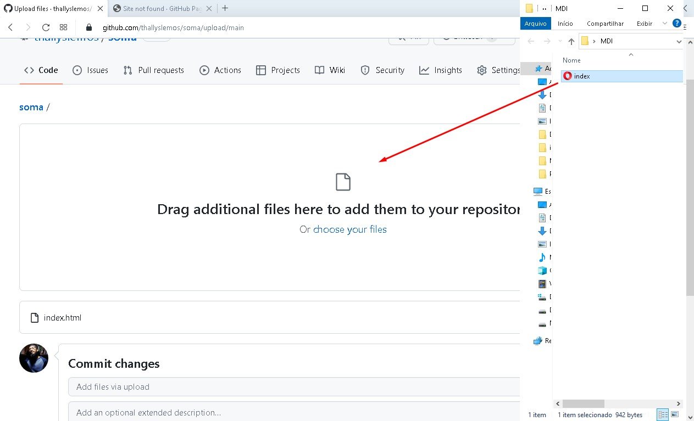 -
10 - "Commite" ou conclua as mudanças feitas no repositório clicando no botão:
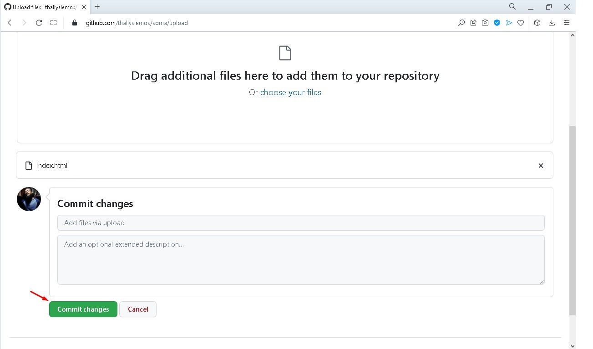 -
11 - O nosso repositório está pronto e já contem o arquivo index.html com nosso programa em JavaScript. O que temos aqui é uma pasta online com o nosso projeto. Para exibir esse projeto em forma de uma página web e rodar nosso programa no navegador, vamos clicar em "settings":
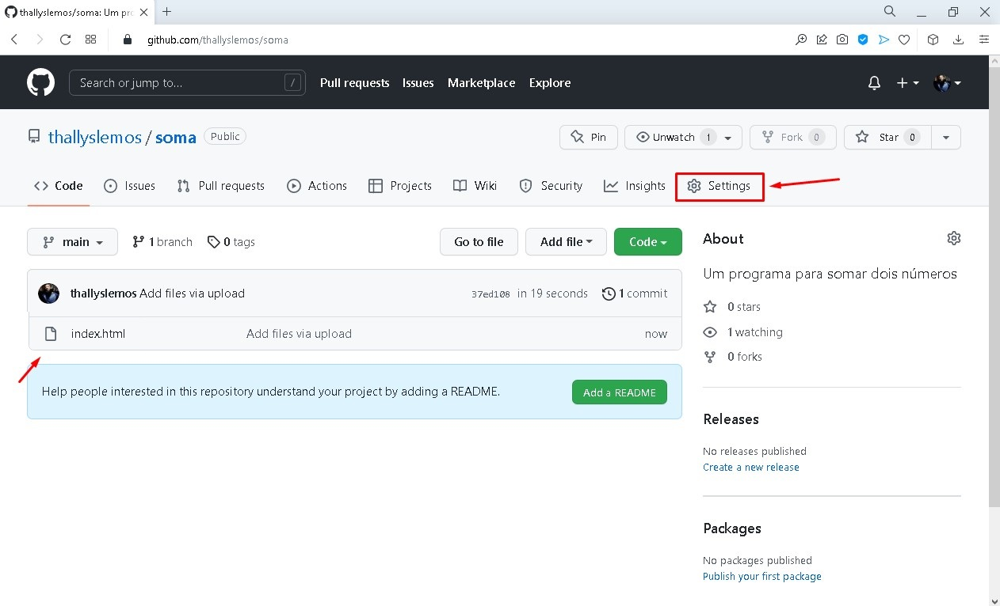 -
12 - Agora vamos procurar no menu lateral o item pages e clicar:
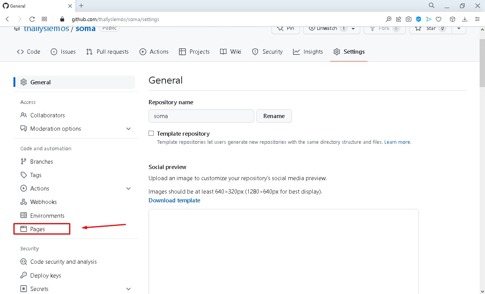 -
13 - Nessa página vamos selecionar a branch "main"
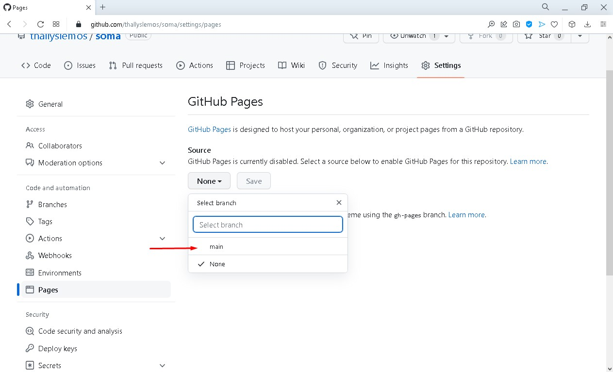 -
14 - Cliacamos em salvar para criar a nossa página no github
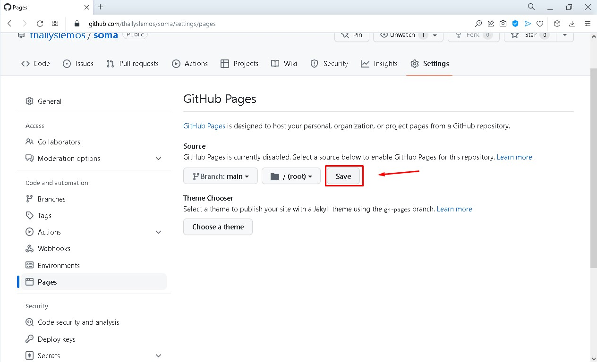 -
15 - A página foi criada e o link dela será exibido no campo marcado, como na imagem a baixo:
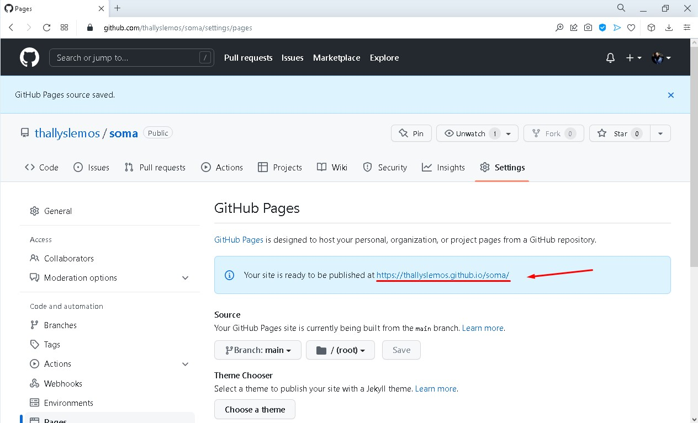 -
16 - Nessa imagem, podemos ver nosso programa sendo executado em uma página hospedada no github! Clique aqui para testá-lo.
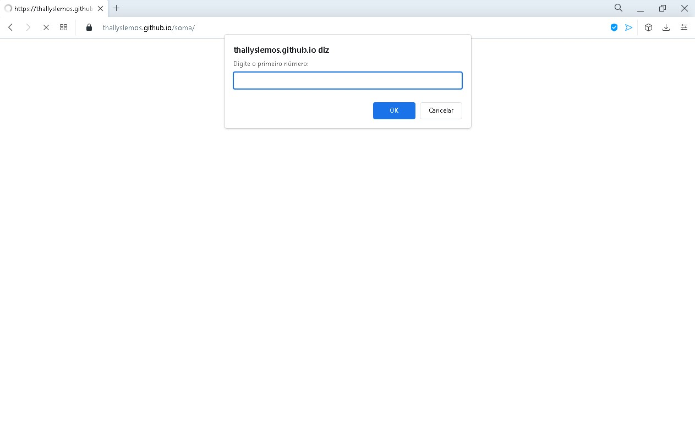